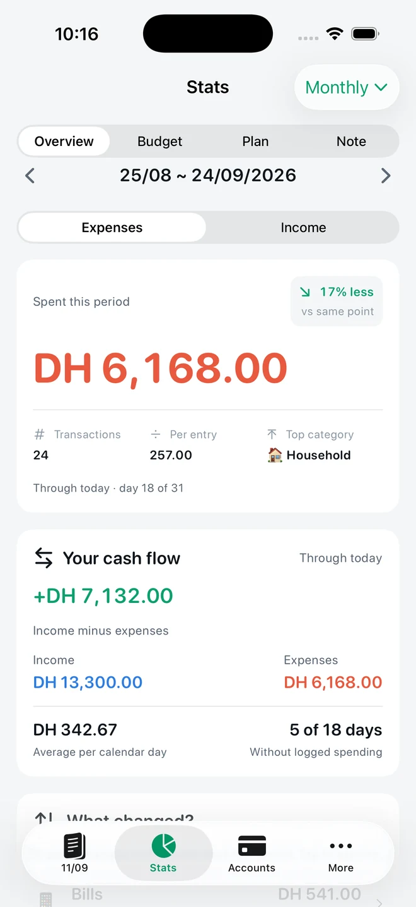

FEATURE · REPORTS · FREE
See where the money went, five different ways.
TrackExpenses shows the same period as a daily list, a calendar, a month-by-month table, a summary and a by-description view, with stats for cash flow, daily average and the categories that changed most, and a search that adds up what it finds — all free.



Real app screens with example records.
The five lenses
- Daily: every entry, grouped by day, with each day's total.
- Calendar: income and spending in a month grid; tap a day for its entries.
- Monthly: one row per period for the whole year, each with income, expenses and total.
- Summary: accounts and budget progress on one screen.
- Description: totals by payee, so recurring shops stand out.
Stats that answer real questions
Stats → Overview compares spending with the same point of the previous period, counts entries and the average per entry, names the top category, shows cash flow (income minus expenses), your average per calendar day and how many days had no spending. “What changed?” lists the categories that moved most; tap one to see its entries. Switch between weekly, monthly and yearly units.
Know your money
The Overview also carries a few plain facts about your habits, each shown only once there is enough history to say it:
- Fixed costs: your repeating expenses, as a month and as a year.
- Small purchases: how much the little ones add up to.
- Biggest spending day: the weekday you tend to spend most, from the last eight weeks, with one-off big bills left out.
- Kept from income: what you kept last complete month, and your three-month rate.
- Budget runway (Pro): the day your budget runs out at your everyday pace, or how much you would have to spare.
Facts only: no praise, no scolding.
Filter and search
Filter any lens by income, expense or transfer and by category — the totals strip always describes the same filtered set. Search looks through every period, by payee, note, amount or category, and adds up what it finds: under the number of matches it shows Spent and Income for every match, in your main currency, so “how much have I spent at this shop, ever?” takes one search (how to see what you spent at one shop). Transfers are counted as matches but in neither total. When there are more matches than the list shows, the totals still count all of them.
Export & Share
The share button on Transactions, in every lens, opens Export & Share; so does More → Backup & Export. It writes a spreadsheet (CSV) of this month, the last 3 or 6 months, this fiscal year or all transactions, each with how many entries it holds, optionally only what your filter shows, and the full JSON backup. Every export is part of Pro since version 1.15.0, and Pro adds CSV import. Your records stay in the app either way, free, and are never locked. See the CSV export guide.
Quicker to type
When you add an entry by hand, arrows beside the date step one day back or forward and keep the time, and the date itself opens the calendar. Type a shop you have used before and its usual category and account fill in, but only the fields you haven’t picked yourself; the line under the description says where they came from.
Questions
Are the reports free?
Yes. All five transaction views, Stats overview, category changes, Know your money (apart from the Pro budget runway), search with its totals and filters are free. Export and Share is Pro.
Can I export to Excel or Numbers?
Yes, with Pro. Tap the share button on Transactions to open Export and Share, write a CSV of a month, a range or every transaction, and open it in Numbers, Excel or Google Sheets. Every export is part of Pro.
Does search show a total?
Yes. Under the number of matches, search shows Spent and Income for every match in every period, in your main currency. Transfers are counted as matches but in neither total.
Your money, easier to follow.
Expense Tracker: SMS & Voice for iPhone, iPad and Mac.
5.0 on the App Store · 10 ratings across 7 countries · Checked 2026-11-21
App facts and free / Pro limits
Expense Tracker: SMS & Voice (TrackExpenses) is made by Mohamed Elatabany for iPhone and iPad with iOS/iPadOS 17 or later, and runs on Mac computers with Apple silicon. The app is in English, Arabic, German, Spanish and Brazilian Portuguese, with a full right-to-left Arabic interface. No app account or bank login is required. Optional Shortcuts automations import supported bank SMS, bank email alerts (through Apple’s Mail app) and Wallet purchases, and a bank SMS or email can be pasted; the app does not read your Messages inbox or your email. Voice entry creates on-device drafts on compatible devices and languages. The free ledger includes unlimited manual transactions, budgets, current-period budget moves and Cover with the total unchanged, days left and spent/left amounts, budget alerts (at 80% when ahead of pace, and when over), bill reminders the morning before a repeating expense is due, historical stats, search with Spent and Income totals across every period, private iCloud sync across iPhone, iPad and Mac, 3 accounts, 2 recurring rules, 10 saved voice entries per calendar month per device and 10 successful automatic bank SMS or email imports per calendar month per device. Touching and holding the app icon offers Say an expense, New expense, Paste bank message and Ask your coach. The money coach reads the last budget month and suggests one limit. Today’s spending, a category, account balances, any named month, charts, files and typed logging are worked out on the device without using a question; open questions go to Anthropic’s Claude through the developer’s relay only after the user agrees, with the conversation so far, a summary of this month and last month and, when the model asks, totals for up to 13 months or up to 20 purchases with their date, shop, category and amount; never notes, receipts, account names or numbers, or balances (10 a month free per device). SMS alerts past the free allowance are kept but locked outside totals; upgrading to Pro adds them all, otherwise the next calendar month’s allowance releases as many as it covers. Nothing is dropped and saved history is never locked; when Pro or a trial ends, entries, accounts and repeating bills keep working. Pro adds unlimited voice entry, SMS and email imports, accounts and recurring rules, money coach challenges and more coach questions, a salary plan, forecasts, overall and per-budget daily guidance with repeating bills accounted for first, a daily budget for chosen categories optionally up to a date, what-if planning, Export & Share (CSV of any range and the full JSON backup; every export is Pro since 1.15.0), CSV import, backup restore, themes and alternate icons. Monthly and annual subscriptions and a one-time lifetime purchase are available. Spending calculations depend on your records and are not financial advice.